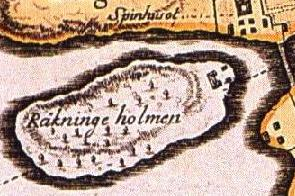
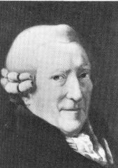
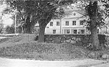
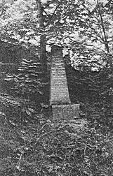
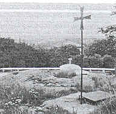
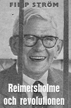
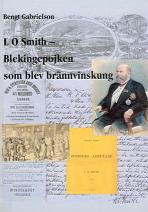
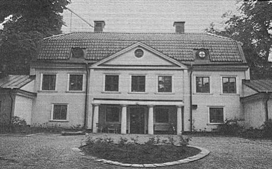

|
Ur Malmgårdarna i Stockholm, Birgit Lindberg, 1985
När vi i dag talar om Reimersholme tänker vi på Vin- och Spritcentralen eller moderna, vackra
HSB-hus. Den vi främst borde tänka på är hattstofferaren Anders Reimers, som givit holmen dess
namn. Hans vänner hade en namndöpningsceremoni på Reimers malmgård den 24 juni 1798 och gav
den namnet Reimersholm, vilket namn sedan hela holmen övertagit.
|

|
|
Vi går längre tillbaka i tiden. Den obebyggda Räkningeholmen (Räkenholmen,
Räkneholmen) tillhörde 1382 den rike och mäktige Bo Jonsson Grip, men först på Biurmans
karta 1751 ser vi ett litet hus med flyglar på den östra sidan av ön. Där bodde prästen vid
spinnhuset på Långholmen. Han var antagligen först som åretruntboende, men han fick ro till
och från sitt arbete, eftersom det inte fanns någon bro. Holmen fick sin första bro omkring
1815, vilken ersattes av en järnbro 1889. Den nuvarande betongbron var färdig 1942.
|
Räkningeholmen hade hört under Hägerstens gård, men inlösts av Kronan för att användas som
prästboställe. Då prästen flyttade över till spinnhuset på Långholmen behövdes inte holmen längre,
och Anders Reimers fick år 1782 arrendera östra delen av ön. Han var då sedan 1777 direktör för
spinnhuset. 1784 köpte han gården, enligt Forsstrand, (Köpmanshus i gamla Stockholm : nya bidrag till skeppsbroadelns historia / af Carl Forsstrand, 1919), från ryttmästare Christian Henrik von
Schnell på Årsta säteri. Räkningeholmen omtalas nämligen då som "rå- och rörstorp under Årsta",
men inget köpekontrakt har hittats. Hägersten avsöndrades från Årsta säteri år 1763.
|
Reimers var bördig från Norrköping och kom år 1744 som sjuttonåring till Stockholm. Han
började snart utbilda sig till hattstofferare, vilket tog honom åtta år. Vi skulle säga att han var
kunnig i allt som hörde till herrekipering. Hans arbetsförmåga, kunskaper och allmänna duglighet
måste ha varit anmärkningsvärda. Han blev nämligen i rask takt rådman, riksdagsman, ledamot av,
medlem av, direktör för, direktör vid den ena efter den andra av huvudstadens offentliga
institutioner och inrättningar. Detta förde även med sig en allt bättre och bättre ekonomi. Han
omtalas senare som grosshandlare.
Privat hade det också inträffat stora förändringar för Reimers. Hans första hustru, Agatha Christina
Amnaeus, hade dött och han hade gift om sig med Hedvig Sophia Fahlborg. I första äktenskapet
föddes sex barn, av vilka två dog i späd ålder, i andra äktenskapet föddes tre barn.
|
|

|


|
|
Stockholm var vid den här tiden en inte särskilt renlig stad och den hade jämte Paris den
största dödligheten bland Europas huvudstäder. Linne tyckte den "luktade privet". Allt detta
tillsammantaget var nog anledningen till att Anders Reimers sökte sig en sommaregendom på
malmarna.
Det första envåningshuset av trä byggdes på och till år 1794 och fick då brutet tegeltak.
Samtidigt byggdes flyglarna samt troligen den kolonnburna entren. Huvudbyggnaden placerades
mycket elegant. Från densamma gick en kort allé ned till Pålsundet och i fonden av detta syntes
Riddarholmskyrkans spira.
|
En malmgård måste ju också ha vissa ekonomiutrymmen. Alltså byggdes på norra sidan ladugård för
sex kor, stall, ank- och hönshus samt uthus.
Den likaså obligatoriska trädgården placerades söder om manbyggnaden. Givetvis med ett
växthus.
Väster om gården ordnade Reimers en engelsk park. Han sprängde berg, fyllde ut stränderna,
uppförde terrasser och förde dit jord på pråmar, eftersom det inte fanns mycket jord på holmen.
Troligt är väl att detta bidrog till den unika floran på ön. Där lär finnas inte mindre än 270 olika
växter.
Reimers var alltså verksam på en mängd områden. Det är inte utan fog som hans vänner vid en fest
den 24 juni 1798 reste en sten med vidstående inskrift.
|
|
Vandringsman
Skåda Här
Den fordna
Räkenholmens Klippor
Till blomstrande
Fält och Trädgårdar
Förvandlade
Genom den
Förtjente
Rådmannen
i Stockholm
Herr Anders Rejmers
Flit och Kostnad
Från år 1784 till 1798
|
|

|
Har
han här användt
Lediga Stunder
Att af Sjö och Berg
Tilldana frugtbart Land.
In uti Ålderdomen
Gagnande
Lärer Han Dig
At
Nyttig Flit är Hvila.
Vänner Reste Honom Stenen
Och Stället blef Kallat
Reimersholm
Den 24 Junii År 1798
|
|
Gården fick alltså detta år namnet Reimersholm. Den hade tidigare, från år 1787, hetat Sophieberg
efter Reimers andra hustru, vilket namn finns belagt i en lagfartshandling.
|
När man går omkring på holmen skall man inte försumma att titta på minnesstenen och inte heller
på det kors som reser sig mot skyn på öns högsta punkt. Det är ett Arla Coldinukors. Vid en Arla
Coldinu-festlighet på ön 1790 restes ett kors. (Arla Coldinu var ett hemligt ordenssällskap, som
stiftades 1765 i Stockholm.) Vid en ny festlighet år 1810 byttes detta ut och ett tredje kors uppsattes
år 1947. Kvar från 1810 finns en metallplatta i Coldinuchiffer. En likalydande inskription hittades gömd i taket på Reimersholms
malmgård. När denna blivit löst visade det sig vara tre bibelställen: Matteus 28:6-7, Johannes
20:29 och Esaia 54:10.
|
|

|
Reimers kom att älska sin malmgård. Som många andra gjorde han den därför till fideikommiss.
Hittills hade allt gått honom väl i livet, men innan han dog, nära 90 år gammal, den 5 sept. 1816,
skulle han få uppleva många sorger. Han fick följa sina båda hustrur och sex av sina nio barn till
graven. Detta gjorde att han flera gånger ändrade sitt testamente och dess fideikommissbestämmelser.
I de slutliga förordningarna av år 1809 insattes dottersonen Jacob Anders Peterson som fideikommissarie mot att han till sitt eget namn lade namnet Reimers. Så blev det ej. Dottern Sophia
Wilhelmina Kemner flyttade in på gården och bodde där till sin död år 1853. Därefter upphävdes
fideikommisstiftelsen och gården försåldes vid en auktion den 17 juli 1858 i "Schweizerilokalen vid
Lilla Cathrineberg strax utanför Hornstull".
|

Läs Filip Ströms skildring av sin
ungdom på Reimersholme - även brännvinskrigen
|
|
Sex sjundedelar av lägenheten Reimersholm såldes av arvingarna till Gustaf Fredrik Richter, som
1859 sålde till textilfabrikören Carl Johan Stenström. Denne startade en yllefabrik alldeles intill
Långholmskanalen. Arbetskraft kunde han få billigt. 300 av Långholmens fångar användes under
1870-talet av fabriken. För dessa inrättades en särskild bro mellan de båda öarna. Stenström överlät
sitt företag redan år 1866 till Reymersholms AB. Detta i sin tur gjorde konkurs år 1868. Då bildades
Stockholms Yllefabriks AB, som arbetade under goda förhållanden ända till 1934.
Fabriksbyggnaderna revs 1941. Arbetarbostäderna byggde Yllefabriken i Reimers engelska park bland
ekar och ovanliga växter.
|
|
Den återstående sjundedelen, som ärvts av Wilhelm Ludvig Reimers, såldes också till Richter.
Näste köpare var Henry Orland Jones. Även han startade en fabrik. Sommarnöjesön blev
industriö. Jones' fabrik tillverkade Amerikansk Fotogen Olja. I mitten av 1860-talet framställde
den ca 200 000 liter fotogen per år. Inte heller detta företag gick bra och därför såldes fabriken
redan efter fem år, då på exekutiv auktion. Köpare var Lars Ohlsson Smith, kanske mera känd
som "Brännvinskungen".
Anders Reimers skrev 1812 i ett tillägg till sitt testamente:
"Rejmersholm far aldrig utarrenderas till wärdshus eller näringsställe." Värdshus blev det inte
heller men en spritfabrik, som kom att bli bestående till år 1978, då den flyttade till Årstadal.
|

Läs utdrag ur boken
om LO Smith
|
|
Lars Ohlsson var en fattig bondson från Blekinge född år 1836. Om honom sägs det att hans
färd från fattigdom till rikedom förefaller som en saga. Som ung togs han om hand av konsul Carl
Smith i Karlskrona och fick tillstånd att ta hans namn. Han kom till Stockholm 1849, bildade
1858 en grosshandelsfirma, L O Smith & Co, köpte en sjundedel av Reimers egendom 1869,
startade där en spritfabrik, som han utvidgade i flera omgångar, och dog slutligen i Blekinge
fattig och bitter.
1870-80 bodde Smithen under somrarna också i närheten av sitt företag. Karlshäll på
Långholmen blev hans "avkopplingsställe". Där kunde han promenera i den oas som räknades
"bland de mest välskötta trädgårdarna i Stockholm". Tjänstemannen vid fängelset på
Långholmen Gustaf Löfdahl har berättat om den: "överallt i bergssluttningarna fanns fruktträd,
äpplen, päron, plommon, ofta ädla sorter, som hemförts av Smith från hans långa resor".
|
Efter den lysande sommarnöjestiden under Anders Reimers har själva malmgårdsbyggnaden
använts i mindre festliga sammanhang. 1870 bor 14 personer i gården.
På 1940-talet började HSB bygga på ön och malmgården förvandlades till daghem. Industriön hade
blivit bostadsö.
|
|

|
|
|
|